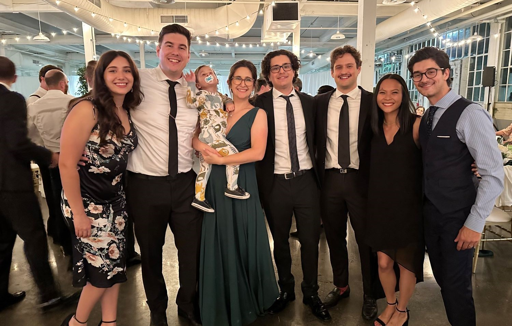

Ethan Borg
Home
Projects
About Me

My name's Ethan Borg, I am from Mississauga Ontario but I am
currently studying at the University of Western Ontario in
London. I was born in 2002 and have always been interested in
the field of computing.
My work can be found throughout this website, Enjoy!
You can download my Resume from the following links